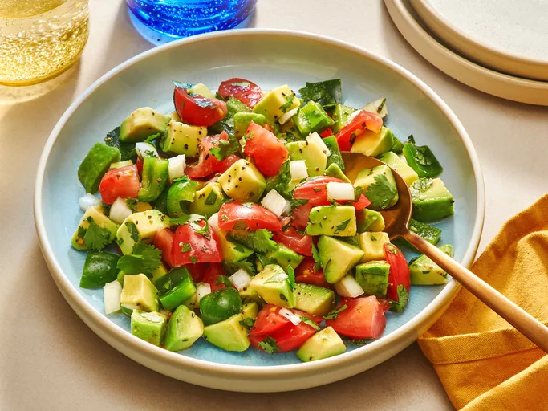

Avocado Salad
Homepage

Description
Avocado Salad is a refreshing and healthy side dish that typically features avocadoes as the main ingredient, combined with other fresh vegetables and herbs.
Ingredients
- Avocados: This recipe starts with two peeled,pitted, and diced avocados.
- Onion: A chopped sweet onion lends a bold flavor.
- Bell pepper: A chopped green bell pepper gives the salad a welcome crunch.
- Tomato: A chopped ripe tomato adds even more color and flavor.
- Cilantro: Chopped cilantro takes the flavor up a notch.
- Lime: Fresh lime juice adds brightness and prevents browning.
- Seasonings: Simply season the avocado salad with just salt and pepper.
Steps
Simply stir all the ingredients together in a bowl. That's it!